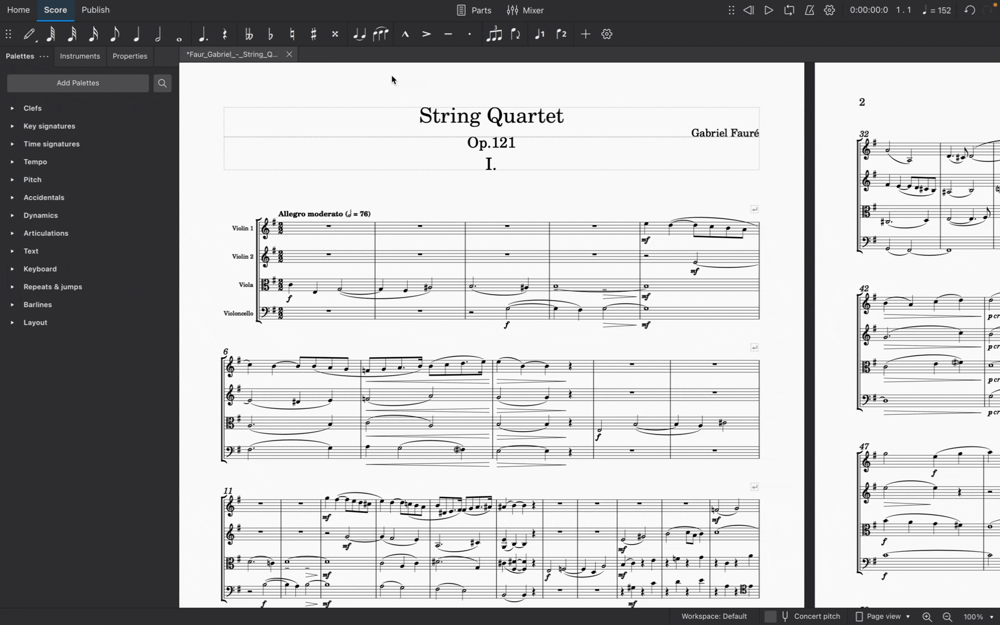
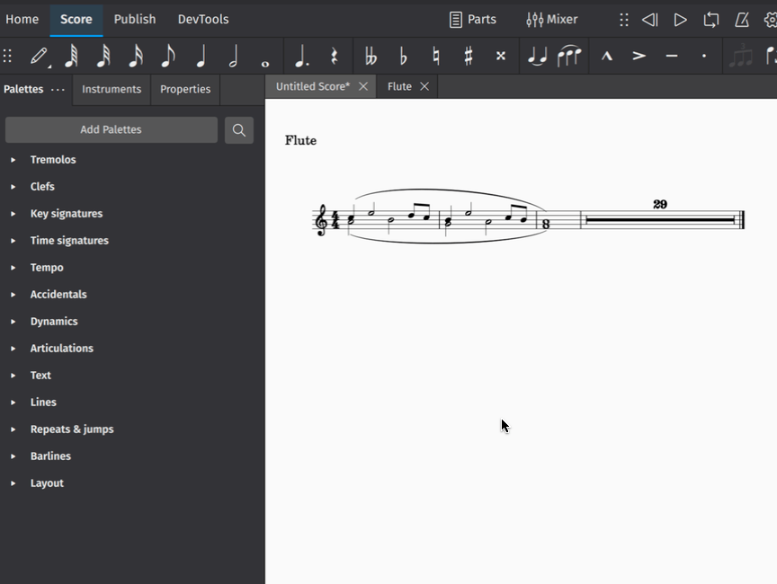
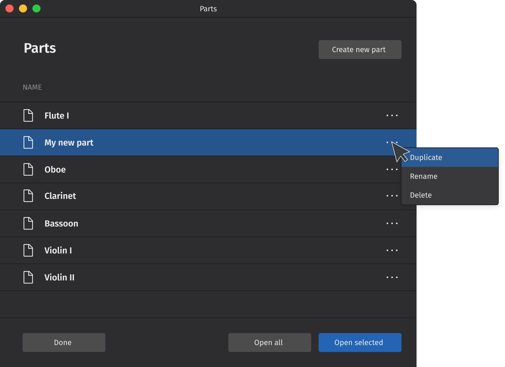

Parts
Opening a part
MuseScore 4 automatically creates a separate (default) part for every instrument in your score.
To open all parts at once:
- Click Parts in the toolbar (This will open the Parts dialog)
- Click Open all
To open an individual part:
- Click Parts in the toolbar
- Click a part to select it
- Click Open selected
You can also select specific parts to open at once. Do this by holding Ctrl (Mac: Cmd) while selecting the parts you’d like to open, then click Open selected. You can also select a range of contiguous parts by clicking the first and holding Shift while clicking the last.

Closing a part
Click the X close button in a part tab to close a part.

Note that changes you make to a part will be saved with that part and retrievable the next time you open it from the Parts dialog.
Creating custom parts
The Parts dialog is tightly integrated with the Layout panel. This integration makes it easy for you to create parts with any combination of instruments from your score.
There are two ways to customise parts in MuseScore 4: using the default (i.e. ready-made) parts to reveal other instruments, and creating entirely new parts.
Reveal instruments in default parts
As we’ve already seen, MuseScore 4 automatically creates a new (default) part for every instrument in your score. All you have to do is open the part from the Parts dialog.
In fact, each default part already contains all of the instruments in your score – they’re simply hidden from view (except, of course, the chosen part instrument).
This means you can “reveal” other instruments within any of the default parts. To do this:
- Open a part (as described above)
- Select the Layout panel
- Click the eye icon next to another instrument
This instrument will now be visible in the chosen part.
This makes creating custom parts an incredibly flexible process. Revealing or hiding other instruments is completely non-destructive, meaning you can customise every instrument in every part, and hide or show only what you want to reveal to different players (or for different musical projects) without having to create entirely new parts each time.
Create a new part
You can create a completely "blank" part from scratch, allowing you full control over which instruments it shows. To do this:
- Click Parts in the toolbar to open the Parts dialog
- Click Create new part
- Give your new part a name
- Click Open selected
Your new part will now be open in the Score tab, but it will appear to contain no instruments. To add instruments to this part:
- Go to the Layout panel
- Click the eye icon next to each instrument you’d like to appear in your part
Choose which voices appear in each part
Sometimes it will be necessary to create individual parts from staves that contain multiple voices. You might, for example, want to extract separate parts for orchestral players who share a stave in the main score (E.g. Flute I and Flute II). Or you might wish to create individual vocal parts from choral scores where, for example, four voices are notated across two staves.
You'll need to first create (see above) or duplicate (see below) a part. To then select which voices will appear in a part:
- Open a part (see above)
- Go to the Layout panel
- Expand an instrument by clicking on the triangular dropdown icon
- Click the settings icon next to the stave name
- Select which voice(s) you want to appear in your part by ticking/un-ticking the checkboxes under Voices visible in the score

Applying styles to parts
Style settings for a wide range of engraving elements can be applied specifically to parts without affecting the main score.
To change style settings for a specific part:
- Ensure a part has been opened and is currently selected in the Score tab
- Go to Format → Style...
- Make your desired style settings changes (applicable changes will be visible in the score in real time)
- Click OK to confirm your changes
Changes you make in this dialog will affect only the part selected in the Score tab. If you want changes to affect all parts (but not the main score), select Apply to all parts before clicking OK.
Learn more about saving and loading default style settings in Templates and styles.
Managing synchronisation of score and parts
(This section describes features that are new or considerably enhanced in MuseScore 4.2.)
When you make changes to the content of the score - adding or deleting an item, or changing pitches and durations of notes, for example - these changes are always reflected in the parts, and vice versa.
However, just as you can apply different styles to score and parts, you may want the properties (position, style/appearance) of certain items to differ between score and parts. Therefore:
- When you change any property of an item in a part, that change will not be reflected in the score and the item will be marked as 'desynchronised' from the score, if it is not already;
- When you change any property of an item in the score, that change will be reflected in the part, unless that item is already desynchronised.
When an item in a part is desynchronised, its colour when selected changes to orange and, according on which properties have been changed, the toggles which appear in the Properties panel under Score and part synchronisation will switch off:

Position refers to offset, leading space, minimum distance, autoplace, direction (up/down, above/below), alignment, and a few other properties specific to certain types. Style/appearance is, essentially, all other properties.
If you have made changes to an item in the part but wish to resynchronise that item with the score, you can turn these toggles back on to reset those properties to match the score.
Text items have a third toggle, Text, which allows you to control synchronisation of the content and formatting of a text item. Unlike other properties, this must be manually switched off before you make changes to a text item in a part which you do not want to be reflected in the score.
Excluding items from parts or score
In some cases you may wish certain items to be in the score but not to appear in the parts at all, or to appear in a part but not in the score. This is not the same as simply making the item invisible, as invisible items sometimes affect the layout.
This option is available for frames, clef changes, ottava lines, stave text and system text. In the case of clefs and ottavas, excluding these items from one view will cause the notes there to be repositioned accordingly.
To exclude an item from parts:
- Select the item in the score
- Open Properties
- Under Score and part synchronisation, check Exclude from parts
To exclude an item from the score:
- Select the item in the part
- Open Properties
- Under Score and part synchronisation, check Exclude from score
Renaming, duplicating and deleting parts
This all takes place in the Parts dialog (accessible from the Parts button in the toolbar).

Simply click the "three dots" menu icon next to a selected part to reveal its options. Note that only newly created parts (created by clicking the Create new part button) can be deleted. All parts can be duplicated or renamed.
To duplicate any part:
- Select a part in the Parts dialog
- Click the "three dots" menu icon for the selected part
- Select Duplicate from the context menu that appears
- Enter a new name for the part (or leave the default name as is)
- Hit
Enter, or click anywhere in the Parts dialog
To rename any part:
- Select a part in the Parts dialog
- Click the "three dots" menu icon for the selected part
- Select Rename from the context menu that appears
- Type your new part name
- Hit
Enterto confirm the new name
Note you can also double click on any part in the Parts dialog to rename it.
To delete a newly created part:
- Select a newly created part in the Parts dialog
- Click the "three dots" menu icon for the selected part
- Select Delete from the context menu that appears
When a part is deleted, its tab in the Score tab (if already opened) will be closed. Any customisations made to that part will also be lost. The part will also no longer appear in the Parts dialog.
Exporting and printing parts
To export parts:
- Click File → Export... (alternatively, select the Publish tab and click Export...)
- Check the box next to the part(s) you want to export, or click Select all to choose all parts at once
- Select whether to export all parts combined in one file, or leave the default export setting as each part to a separate file
- Click Export...
- Select your destination file and name your score in your operating system's Export dialog
- Click Save
Parts will be exported in the PDF format by default. To change the export format, select your preferred format from the dropdown menu in Export settings. You can export your parts in a range of image and audio formats, as well as the braille format for compatible printers. For more information, see File Export.
To print parts:
- Ensure the part you wish to print is selected in the Score tab
- Click File → Print
- Use your operating system's print dialog to print the selected part
Note that parts can currently only be printed one at a time.